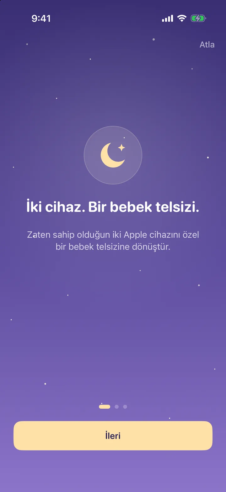
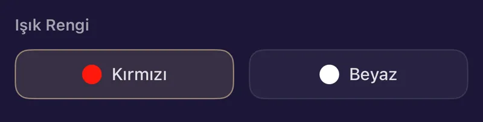
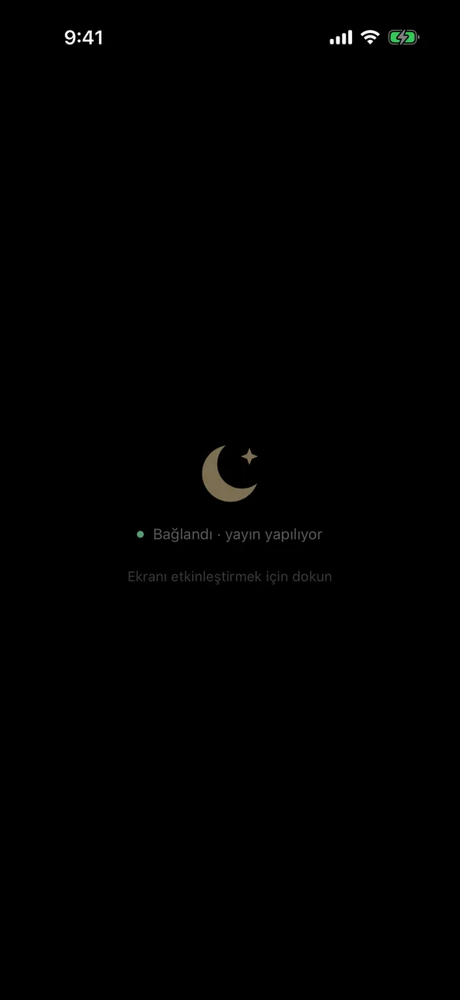
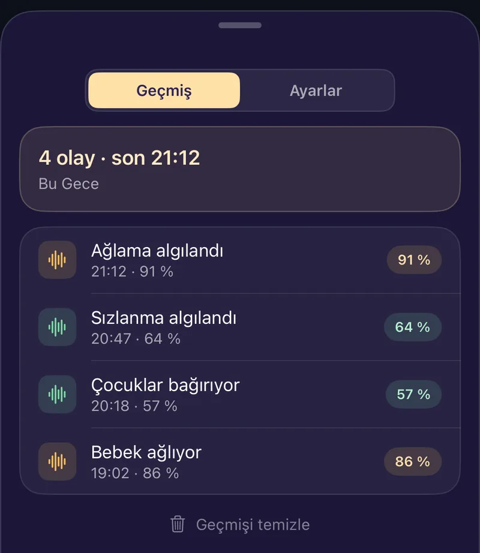
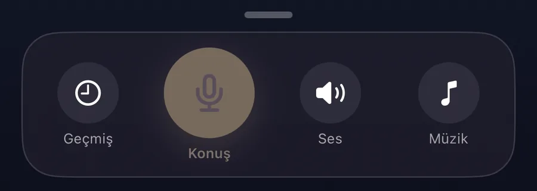
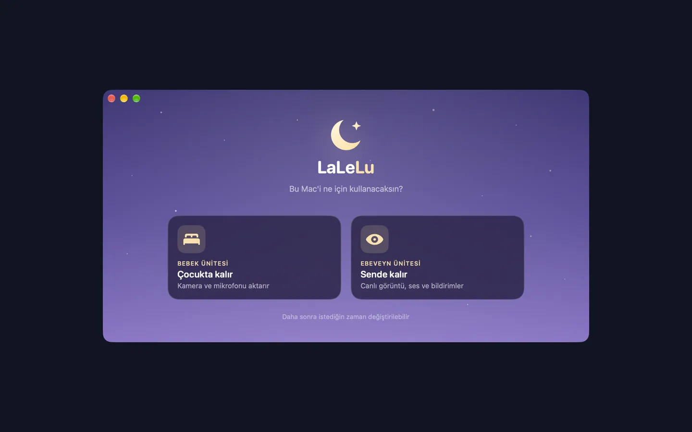
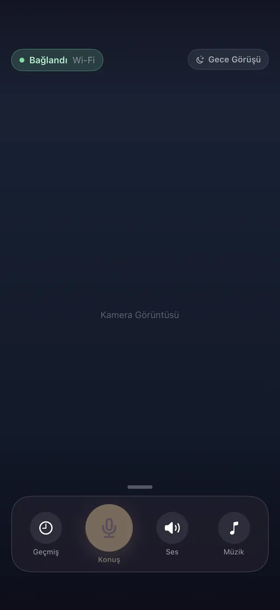

Bebek kamerası uygulaması. Yalnızca siz izlersiniz.
LaLeLu, iPhone, iPad ve Mac’inizi kameralı özel bir bebek kamerasına çevirir. Ücretsiz, abonelik yok, hesap yok. Uçtan uca şifreli.
iPhone, iPad ve Mac için. İki Apple cihazı gerekir.

- Ücretsiz – 0 €
- Abonelik yok
- Hesap yok
- Reklam yok
- İzleme yok
Kameralı bebek telsizi.
Her şey ücretsiz.
Bir cihaz bebek ünitesi olarak bebek odasında kalır, diğeri ebeveyn ünitesi olur. iPhone, iPad ve Mac’i istediğiniz gibi eşleştirin.
- Canlı görüntü ve sesWi-Fi üzerinden ve dışarıda mobil veriyle.
- Gece görüşüBebek ünitesinin ekranı bir lamba olur.
- Cihazda ağlama uyarısıBildirim olarak, ekran kilitliyken bile.
- Bebekle konuşmaYerinizden kalkmadan, tek tuşla.
- Zamanlayıcılı uyku sesleriGürültü, yağmur ve deniz.
- Etkinlik geçmişiYalnızca cihazınızda kalır.
Işıklar kapandı.
Gece görüşü açık.
Bebek ünitesi karanlık bebek odasında kalır. Gece modunda ekranı neredeyse siyahtır, yayın ise sürer.
Gece görüşüyle ekranı kırmızı ya da beyaz, yumuşak bir lamba olur. Kırmızı ışık uykuyu genellikle daha az böler.
Gece görüşünü iPhone’unuzdan da açıp kapatabilirsiniz, odaya girmeden.


Bebeğiniz ağlıyor.
iPhone’unuz biliyor.
Ağlama algılama, Apple SoundAnalysis ile tamamen bebek ünitesinde çalışır. Ağlama veya öksürük duyunca, ekran kilitliyken bile anlık bildirim alırsınız. Bunun için buluta hiçbir ses gitmez.

Hafif bir söz.
Yerinizden kalkmadan.
“Konuş”a basılı tutun, sesiniz bebek odasında duyulsun. Bırakın, yine sessizlik olsun.

Deneyin: “Konuş”a basılı tutun.
Gürültü açık.
Zamanlayıcı işliyor.
Beyaz, pembe ve kahverengi gürültü, ayrıca yağmur ve deniz. Sesleri iPhone’unuzdan rahatça başlatırsınız.
Zamanlayıcı bebek ünitesinin kendisinde çalışır ve sesi yavaşça kısar, iPhone’unuzun bağlantısı arada kopsa bile.
15, 30, 45 veya 60 dakika seçin, ya da süresiz bırakın.
Eski Mac’inizin
yeni bir işi var.
Bebek odasına koyun: yerleşik veya bağlı kamerasıyla bebek ünitesi olur. iPhone’unuz ebeveyn ünitesidir.


1–2 saniyeEvde bağlantı genellikle bu kadar hızlı kurulur. Dışarıda mobil veriyle çoğu zaman birkaç saniye içinde.
İstediğiniz gibi birleştirinBebek odasında iPhone, iPad veya Mac, sizde iPhone veya iPad. Bebek ünitesi olarak eski bir iPhone yeterli.
İki ebeveyn içinBirden fazla ebeveyn ünitesi aynı anda bağlanabilir, farklı Apple Kimlikleriyle bile.
Bebek kamerası gizliliği:
kimse izlemiyor.
- Uçtan uca şifreli.
- Görüntü ve ses doğrudan cihazlarınız arasında akar (WebRTC, DTLS-SRTP). Görüntüyü yalnızca kendi eşleştirdiğiniz cihazlar görür.
- Asla kaydedilmez.
- Görüntü ve ses hiçbir sunucuda veya uygulamada kalıcı olarak saklanmaz.
- Cihazda algılama.
- Ses analizi Apple SoundAnalysis ile yerel olarak yapılır. Bize hiçbir ses gönderilmez.
- Hesap yok, reklam yok, izleme yok.
- Eşleştirme için mevcut iCloud erişiminiz yeterlidir.
Dürüst olalım: LaLeLu bağlantıyı ve uyarıyı aktarmak için Apple (iCloud, push) ve Cloudflare’i kullanır. Nelerin ne kadar süre saklandığı gizlilik bildiriminde (İngilizce) ayrıntılı olarak açıklanır.
Abonelik ve hesap gerektirmeyen bebek kamerası
Birçok bebek kamerası uygulaması abonelik, cihaz başına satın alma veya kendi hesabını ister. LaLeLu istemez.
| Ölçüt | LaLeLu | Tipik bebek kamerası uygulamaları |
|---|---|---|
| Fiyat | Ücretsiz, tüm cihazlarda | çoğunlukla abonelik veya platform başına satın alma |
| Hesap / kayıt | Yok, eşleştirme için yalnızca mevcut iCloud erişiminiz | çoğunlukla kendi hesabı gerekir |
| Reklam ve izleme | Reklam yok, izleme SDK’sı yok | bazen reklam veya analiz |
| Görüntü ve ses | Uçtan uca şifreli, asla kaydedilmez | bazen bulut sunucularında saklanır veya işlenir |
| Ağlama algılama | Cihazda, buluta ses gönderilmez | bazen yalnızca ses eşiği veya bulut analizi |
| Cihazlar | iPhone, iPad ve Mac, istediğiniz gibi birleştirin | çoğunlukla tek platform |
Karşılaştırma, belirli bir uygulamayı değil, pazardaki genel farkları anlatır.
Birkaç dakikada hazır
- İndirin.LaLeLu’yu App Store’dan iki cihaza da yükleyin.
- Seçin.Bebek odasındaki cihazda “Bebek ünitesi”ni, diğerinde “Ebeveyn ünitesi”ni seçin.
- Eşleştirin.Bağlantı veya QR kodla eşleştirin. Hepsi bu.
Bebek kamerası uygulaması: sık sorulan sorular
Bu bebek kamerası uygulaması gerçekten ücretsiz mi, abonelik yok mu?
Evet. LaLeLu; abonelik, reklam ve ücretli kilitli özellik içermeyen ücretsiz bir bebek kamerası uygulamasıdır. Süresi dolan bir deneme yoktur.
LaLeLu'yu kullanmak için hesap gerekir mi?
Hayır. LaLeLu'nun kendi hesabı ve kayıt adımı yoktur. İki cihazı bir kez eşleştirmek için uygulama, iPhone, iPad veya Mac'inizde zaten bulunan iCloud erişimini kullanır.
Görüntü veya ses kaydediliyor ya da saklanıyor mu?
Hayır. Görüntü ve ses canlı olarak, uçtan uca şifreli (WebRTC, DTLS-SRTP) biçimde doğrudan cihazlarınız arasında gönderilir; hiçbir sunucuda veya uygulamada kaydedilmez. Doğrudan bağlantı kurulamazsa, yine şifreli olan akış, şifresini çözemeyen bir Cloudflare aktarıcısı üzerinden geçer.
Kameralı bebek telsizi için hangi cihazlara ihtiyacım var?
İki Apple cihazı: biri bebek ünitesi olarak odada kalır (kamera ve mikrofonlu iPhone, iPad veya Mac), diğeri ebeveyn ünitesidir (iPhone veya iPad). Bebek ünitesi olarak eski bir iPhone yeterlidir. Android desteklenmez.
Mac'imi bebek kamerası olarak kullanabilir miyim?
Evet. Mac uygulaması, yerleşik veya bağlı bir kamera ve mikrofonla bebek ünitesi olarak çalışır. Mac bebek odasında kalırken iPhone'unuz ebeveyn ünitesi olur.
Evin dışında, mobil veriyle çalışır mı?
Evet. Aynı Wi-Fi üzerinden ve ayrıca mobil veri veya diğer ağlar üzerinden bağlanır. İki cihazın da internete ihtiyacı vardır. Evde bağlantı genellikle bir ila iki saniye, dışarıda çoğu zaman birkaç saniye sürer.
Ağlama algılama nasıl çalışır?
Ses algılama, Apple SoundAnalysis ile tamamen bebek ünitesinde çalışır. Analiz için buluta ses gönderilmez ve eğitim için hiçbir şey toplanmaz. Uygulama ağlama veya öksürük duyunca bildirim alırsınız.
iPhone kilitliyken uyarı alır mıyım?
Evet. Uyarı, ekran kilitliyken bile anlık bildirim olarak gelir. iPhone ayarlarından LaLeLu için bildirimlere izin verin.
Bebek ünitesi ile ebeveyn ünitesini nasıl eşleştiririm?
Bebek cihazında bir eşleştirme bağlantısı veya QR kod oluşturur, ebeveyn cihazında açar ya da taratırsınız. Birkaç dakika sürer. Bağlantı eşleştirmenin anahtarıdır; yalnızca güvendiğiniz kişilerle paylaşın.
Birden fazla ebeveyn ünitesi aynı anda bağlanabilir mi?
Evet. Birden fazla ebeveyn ünitesi aynı anda bağlanabilir; böylece iki ebeveyn de, farklı Apple Kimlikleriyle bile, haberdar olur.
Yardım ve destek
Sorularınız, geri bildiriminiz var ya da yardıma mı ihtiyacınız var? Doğrudan geliştiriciye yazın – bir insan yanıtlar: moritz.wolf@a1.net. Uygulamada ayrıca “Sorun bildir / Geri bildirim” seçeneğini bulursunuz.
Bebek telsiziniz zaten cebinizde.
LaLeLu’yu ücretsiz indirin, birkaç dakikada özel bebek kameranızı kurun.
App Store’dan ücretsiz indir